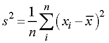
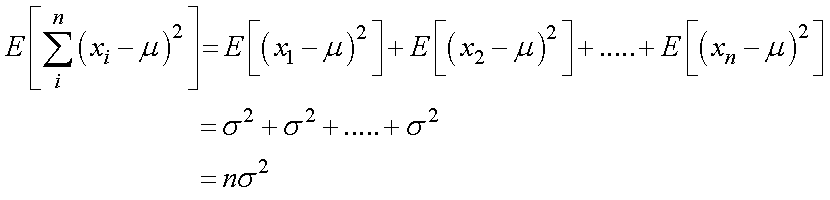
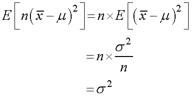
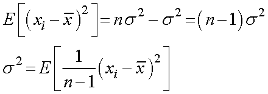

では，本題である，実際の実験で得られた分散値，s2，を考えていきましょう．

1/n，を除いた部分だけ考えていくと（後で期待値を求めるので，今ｎで割る必要はない），
となります．
第一項の期待値は，前ページの，ずれの二乗の期待値を使って，

となります．
第二項の期待値は，前ページの，平均値の散らばり，から，

となります．従って，

と標本の散らばりは，n-1，で割ることとなります．このことを，不偏分散，と呼びます．
では，実際に，n-1，で計算するとどうなるかを次ページで考えていきましょう．